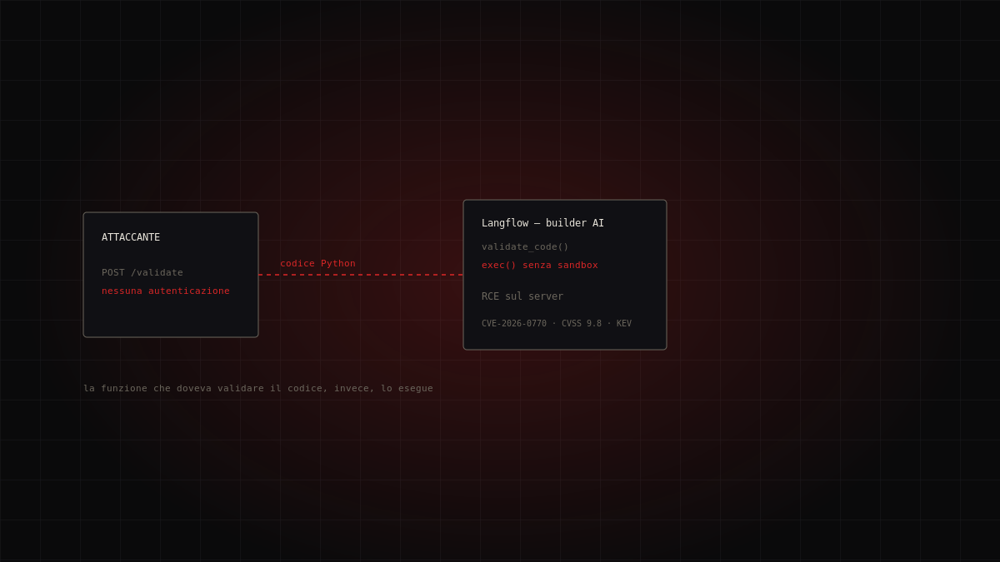
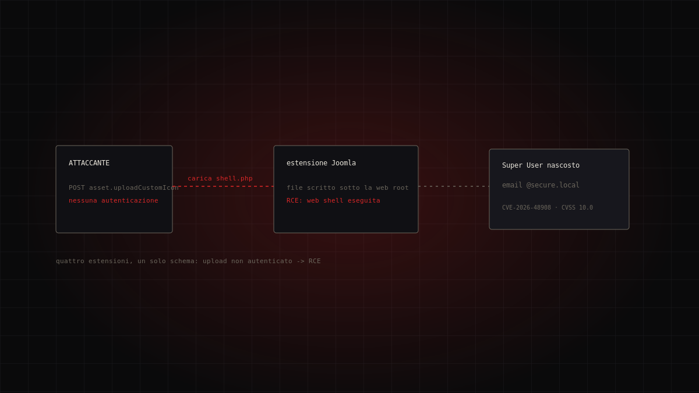
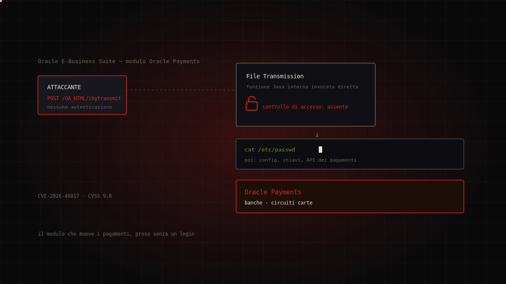
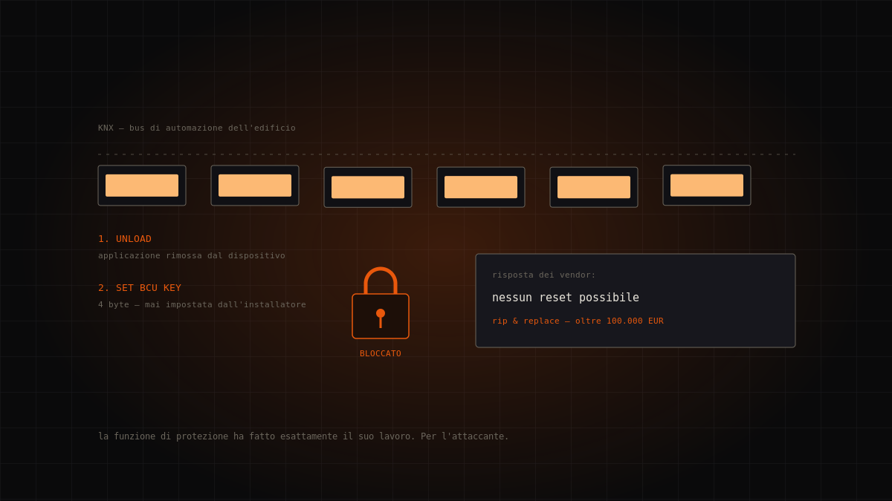
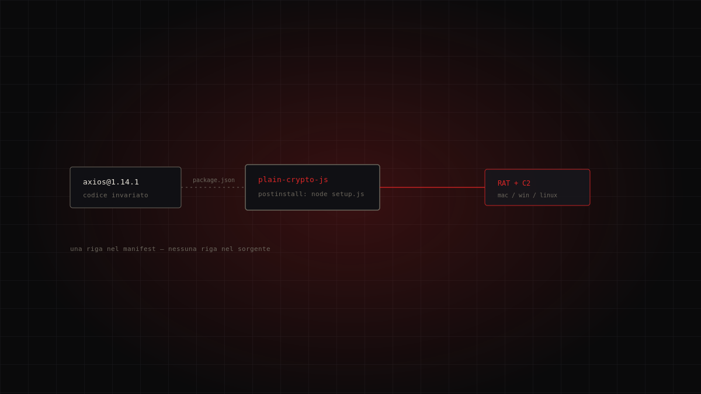
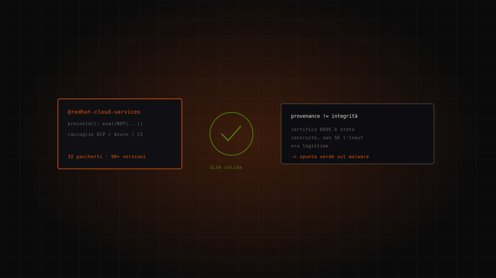
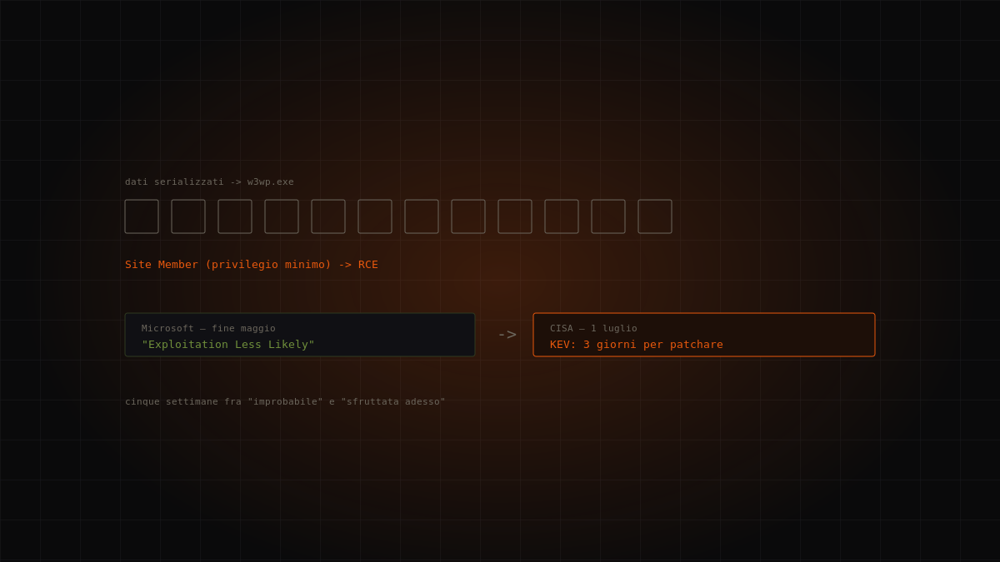

Tema · Minacce
Malware e attacchi
Come si classificano le minacce informatiche e dove trovare una tassonomia condivisa.

Dossier in questa sezione
7 dossierIl generatore di agenti AI che esegue il codice di chi passa: CVE-2026-0770 su Langflow
Langflow è uno strumento visuale per costruire flussi e agenti basati su modelli linguistici. La funzione che dovrebbe «validare» il codice inserito d…
Non attribuito · sfruttamento opportunistico (PoC pubblici su GitHub) · critical
Continua a leggere →
Quattro estensioni Joomla, un solo schema: l'ondata di upload non autenticati che pianta admin fantasma
In poche settimane quattro estensioni Joomla molto diffuse — SP Page Builder, iCagenda, PageBuilder CK e Balbooa Forms — sono finite nel catalogo CISA…
Non attribuito (nessun attore o campagna nominati; disclosure di Phil Taylor / mySites.guru) · critical
Continua a leggere →
Il modulo che muove i pagamenti, preso senza un login: CVE-2026-46817 su Oracle E-Business Suite
Oracle Payments è il motore di pagamento dentro Oracle E-Business Suite: è il punto in cui le applicazioni finanziarie dell'azienda parlano con b…
Non attribuito (prima osservazione su honeypot Defused; nessuna campagna né attore pubblici) · critical
Continua a leggere →
Nessun malware, nessun riscatto, nessuna patch: il caso KNXlock
Il 15 luglio 2026 CISA ha inserito nel catalogo KEV una CVE del 2023 che descrive un attacco del 2021. Non c'è codice malevolo: gli attaccanti sv…
Sconosciuto — nessuna attribuzione, nessuna richiesta di riscatto · high
Continua a leggere →
Axios, il manifest e il token che nessuno aveva revocato
Il 31 marzo 2026 due release malevole di axios aggiungono una dipendenza-trappola senza toccare una riga del codice sorgente. npm aveva introdotto il …
Attore non attribuito · critical
Continua a leggere →
Miasma: il malware aveva un certificato di provenienza valido
Il 1° giugno 2026 oltre 90 versioni malevole dei pacchetti @redhat-cloud-services finiscono su npm con attestazioni di provenienza SLSA perfettamente …
Attore non attribuito (codice derivato da TeamPCP) · high
Continua a leggere →
«Exploitation Less Likely», poi tre giorni per patchare
Microsoft l'aveva classificata «Exploitation Less Likely». Cinque settimane dopo CISA la inseriva nel KEV con tre giorni di tempo per rimediare. …
Non attribuito · high
Continua a leggere →Il tema in breve
Un linguaggio comune: MITRE ATT&CK
Parlare di “virus” non basta. La comunità di sicurezza usa MITRE ATT&CK, una base di conoscenza pubblica che cataloga tattiche (il “perché” di un passo d'attacco) e tecniche (il “come”), con identificatori stabili. È il vocabolario con cui advisory e report descrivono le intrusioni. In ogni nostro dossier gli ID delle tecniche sono copiati dagli advisory, non dedotti.
Le minacce che contano davvero
L'ENISA Threat Landscape, il rapporto annuale dell'agenzia UE per la cybersicurezza, individua sette minacce prime: attacchi alla disponibilità, ransomware, minacce ai dati, malware, ingegneria sociale, manipolazione dell'informazione e attacchi alla catena di fornitura. L'edizione 2025 ha analizzato 4.875 incidenti fra luglio 2024 e giugno 2025, con una tendenza chiara: gruppi diversi che riusano strumenti e tecniche.
Difendersi parte dal capire
La maggior parte degli attacchi non usa una tecnica esotica: sfrutta sistemi non aggiornati, credenziali deboli, esposizioni non necessarie. Riconoscere le famiglie di minaccia e mapparle su una tassonomia condivisa è il primo passo per prioritizzare le difese sulle cose che accadono davvero, non su quelle che fanno più notizia.
Domande frequenti
- Che cos'è MITRE ATT&CK?
- Una base di conoscenza pubblica di tattiche e tecniche d'attacco, con identificatori stabili, usata come linguaggio comune negli advisory di sicurezza.
- Quali sono le minacce principali secondo l'UE?
- Secondo l'ENISA Threat Landscape: disponibilità, ransomware, minacce ai dati, malware, ingegneria sociale, manipolazione dell'informazione e attacchi alla supply chain.